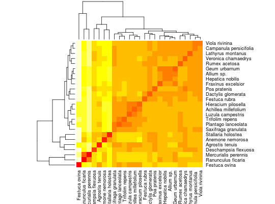

Estudo de 25 espécies de plantas em 17 lotes de um prado de pastagem na Reserva Natural em Steneryd na Suécia. Cada valor na tabela é a soma dos valores cobertos em um intervalo de 0 a 5 por nove quadrantes de amostra, de modo que um valor 45 corresponde à completa cobertura pela espécie.
Um data.frame com 25 espécie de plantas com 18
variáveis.
espl1l2l3l4l5l6l7l8l9l10l11l12l13l14l15l16l17MANLY (2005), pág. 152.
data(ManlyTb9.7)#> Warning: data set ‘ManlyTb9.7’ not foundstr(ManlyTb9.7)#> 'data.frame': 25 obs. of 18 variables: #> $ esp: Factor w/ 25 levels "Achillea millefolium",..: 8 4 22 2 19 16 18 20 24 6 ... #> $ l1 : int 38 0 0 10 0 0 1 0 0 0 ... #> $ l2 : int 43 0 0 12 0 0 0 7 0 0 ... #> $ l3 : int 43 0 0 19 0 0 5 0 1 0 ... #> $ l4 : int 30 4 0 15 0 0 6 10 4 0 ... #> $ l5 : int 10 10 0 16 0 0 2 9 6 0 ... #> $ l6 : int 11 7 6 9 0 0 8 9 9 8 ... #> $ l7 : int 20 21 8 0 0 0 10 3 9 0 ... #> $ l8 : int 0 14 21 9 0 0 15 9 9 14 ... #> $ l9 : int 0 13 39 28 0 0 12 8 11 2 ... #> $ l10: int 5 19 31 8 0 0 15 9 11 14 ... #> $ l11: int 4 20 7 0 13 1 4 2 6 3 ... #> $ l12: int 1 19 12 4 0 0 5 5 5 9 ... #> $ l13: int 1 6 0 0 0 0 6 5 4 8 ... #> $ l14: int 0 10 16 0 21 0 7 1 1 7 ... #> $ l15: int 0 12 11 0 20 11 0 7 7 7 ... #> $ l16: int 0 14 6 0 21 45 0 0 0 2 ... #> $ l17: int 0 21 9 0 37 45 0 0 0 1 ...euclid <- as.matrix(dist(ManlyTb9.7[, -1])) heatmap(euclid, margins = c(6, 6), labRow = ManlyTb9.7$esp, labCol = ManlyTb9.7$esp)